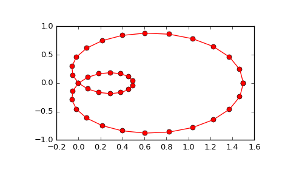

scipy.interpolate.splprep¶
-
scipy.interpolate.splprep(x, w=None, u=None, ub=None, ue=None, k=3, task=0, s=None, t=None, full_output=0, nest=None, per=0, quiet=1)[source]¶ Find the B-spline representation of an N-dimensional curve.
Given a list of N rank-1 arrays, x, which represent a curve in N-dimensional space parametrized by u, find a smooth approximating spline curve g(u). Uses the FORTRAN routine parcur from FITPACK.
Parameters: x : array_like
A list of sample vector arrays representing the curve.
w : array_like, optional
Strictly positive rank-1 array of weights the same length as x[0]. The weights are used in computing the weighted least-squares spline fit. If the errors in the x values have standard-deviation given by the vector d, then w should be 1/d. Default is
ones(len(x[0])).u : array_like, optional
An array of parameter values. If not given, these values are calculated automatically as
M = len(x[0]), wherev[0] = 0
v[i] = v[i-1] + distance(x[i], x[i-1])
u[i] = v[i] / v[M-1]
ub, ue : int, optional
The end-points of the parameters interval. Defaults to u[0] and u[-1].
k : int, optional
Degree of the spline. Cubic splines are recommended. Even values of k should be avoided especially with a small s-value.
1 <= k <= 5, default is 3.task : int, optional
If task==0 (default), find t and c for a given smoothing factor, s. If task==1, find t and c for another value of the smoothing factor, s. There must have been a previous call with task=0 or task=1 for the same set of data. If task=-1 find the weighted least square spline for a given set of knots, t.
s : float, optional
A smoothing condition. The amount of smoothness is determined by satisfying the conditions:
sum((w * (y - g))**2,axis=0) <= s, where g(x) is the smoothed interpolation of (x,y). The user can usesto control the trade-off between closeness and smoothness of fit. Largersmeans more smoothing while smaller values ofsindicate less smoothing. Recommended values ofsdepend on the weights, w. If the weights represent the inverse of the standard-deviation of y, then a goodsvalue should be found in the range(m-sqrt(2*m),m+sqrt(2*m)), where m is the number of data points in x, y, and w.t : int, optional
The knots needed for task=-1.
full_output : int, optional
If non-zero, then return optional outputs.
nest : int, optional
An over-estimate of the total number of knots of the spline to help in determining the storage space. By default nest=m/2. Always large enough is nest=m+k+1.
per : int, optional
If non-zero, data points are considered periodic with period
x[m-1] - x[0]and a smooth periodic spline approximation is returned. Values ofy[m-1]andw[m-1]are not used.quiet : int, optional
Non-zero to suppress messages. This parameter is deprecated; use standard Python warning filters instead.
Returns: tck : tuple
(t,c,k) a tuple containing the vector of knots, the B-spline coefficients, and the degree of the spline.
u : array
An array of the values of the parameter.
fp : float
The weighted sum of squared residuals of the spline approximation.
ier : int
An integer flag about splrep success. Success is indicated if ier<=0. If ier in [1,2,3] an error occurred but was not raised. Otherwise an error is raised.
msg : str
A message corresponding to the integer flag, ier.
See also
splrep,splev,sproot,spalde,splint,bisplrep,bisplev,UnivariateSpline,BivariateSpline,BSpline,make_interp_splineNotes
See
splevfor evaluation of the spline and its derivatives. The number of dimensions N must be smaller than 11.References
[R83] P. Dierckx, “Algorithms for smoothing data with periodic and parametric splines, Computer Graphics and Image Processing”, 20 (1982) 171-184. [R84] P. Dierckx, “Algorithms for smoothing data with periodic and parametric splines”, report tw55, Dept. Computer Science, K.U.Leuven, 1981. [R85] P. Dierckx, “Curve and surface fitting with splines”, Monographs on Numerical Analysis, Oxford University Press, 1993. Examples
Generate a discretization of a limacon curve in the polar coordinates:
>>> phi = np.linspace(0, 2.*np.pi, 40) >>> r = 0.5 + np.cos(phi) # polar coords >>> x, y = r * np.cos(phi), r * np.sin(phi) # convert to cartesian
And interpolate:
>>> from scipy.interpolate import splprep, splev >>> tck, u = splprep([x, y], s=0) >>> new_points = splev(u, tck)
Notice that (i) we force interpolation by using s=0, (ii) the parameterization,
u, is generated automatically. Now plot the result:>>> import matplotlib.pyplot as plt >>> fig, ax = plt.subplots() >>> ax.plot(x, y, 'ro') >>> ax.plot(new_points[0], new_points[1], 'r-') >>> plt.show()
